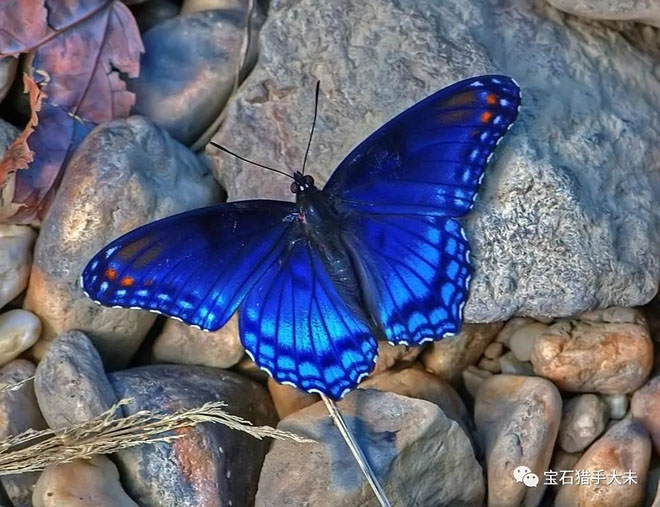

从蝴蝶翅膀看哥伦比亚祖母绿的魅力
2018-03-13
乍一看到这个题目估计您的反应是蝴蝶翅膀和哥伦比亚祖母绿这两个八竿子打不着的事物能有什么关系? 难不成是有名的蝴蝶效应,就是南美洲的蝴蝶扇扇翅膀可能会引起北美洲的一场风暴? 倒也没有那么夸张，可是这两者还真有着撇不清的关系，且听我慢慢道来。
话说我去哥伦比亚祖母绿矿区的时候，当地的矿工告诉我，他们特别希望能看到当地的一种蓝色蝴蝶，因为这种蝴蝶代表着独一无 二的运气，往往预示今天会开采到质量特别好的祖母绿。而特别巧的是，在我听完这个典故的那一次哥伦比亚行程里，真的看到了一只 蓝色的蝴蝶，我从越野车里首先看到一只蝴蝶在追随我们的车飞舞，赶紧叫同车的哥伦比亚美女确认，她欣喜的尖叫，不知道矿工们那 天是否采到特别好的祖母绿，但我那天确实看到了不止一颗顶级祖母绿。